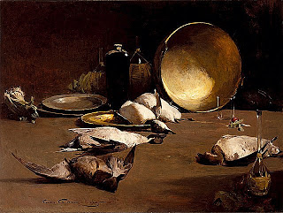

Chullin 115 - What To Do With Non-kosher Meat?
Rav Ashi said, "How do we know that the mixture of meat cooked with milk is prohibited for consumption?" After all, the Torah only prohibited cooking. However, since it also said, "You shall not eat any abomination," it is teaching us that one should distance himself from anything that the Torah considers prohibited, and thus one should not eat such mixture.
Furthermore, from the teaching of Rabbi Abahu we learn not to derive benefit from such mixture. For Rabbi Abahu said, "Any time that the Torah commanded not to eat something, it is prohibited both for food and to derive benefit - unless the benefit was specifically allowed. For example, the Torah said, "Do not eat any animal that died by itself ( nevelah ), give to a Noahide or sell to a gentile." Had the Torah not mentioned specifically giving and selling, we would not be allowed to benefit from it - and this teaches us all such cases.
Incidentally, Rabbi Yehudah requires to gift nevelah to a Noahide, absent that, one can sell it to a gentile. However, Rabbi Meir allows to equally sell or gift it, either to a Noahide, or to a gentile.
Art: Sören Emil Carlse - Still Life with Ducks